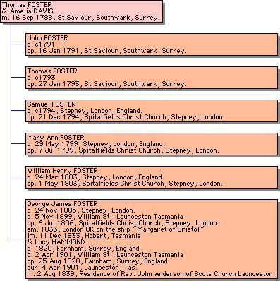

FOSTER of Launceston, Australia, Chapter 1.
Courtesy: Jill Gooden
George FOSTER is pictured on left. He was born in 1805 in Stepney, London, England and died in 1899 at Launceston, Tasmania. He was the longest serving marine pilot of Low Head, Tamar River and Launceston, Tasmania Australia, with 44 years service on the river. George held the position of Senior Pilot at the Low Head Station for 19 years.
It is hoped that this website will promote discussion about George and his family, which originated from Bow and Stepney in London, UK, and from Southwark of Surrey, UK. Details are also given about George’s wife Lucy HAMMOND and her family who came from Farnham, Surrey, UK. My thanks to my various cousins and friends, who have readily provided information, photos etc. They are acknowledged in the text. Especial thanks to Wayne Shipp for access to documents kept in the Low Head Pilot Station Archives. Douglas Burbury has been most generous in obtaining documents from the Deeds Library of the Titles Registry in Hobart, as well as up-to-date photos of the FOSTER home in Launceston. Recently, the descendants of Annie STEVENS (née FOSTER) (b. 1850) have given me access to Annie’s collection. This comprised historic photos from her album, as well most important newspaper clippings relating to family events in her scrapbook. Some of these clippings contained interesting engravings of Tamar River scenes published in 1879. Thanks to Jill Gooden, Lorna and Murray Barclay who have enabled this great breakthrough. Their photos are included with others in the FOSTER Photo Gallery and in the STEVENS Photo Gallery. Note that the above photo of George FOSTER (courtesy of Jill Gooden) is included with greater detail in the FOSTER photo gallery.
An excerpt from this website has been published in the Launceston "Examiner" in the "Way Back When... People Places Events" series on 10 July 2004, p.30, under the heading of "Pilot survived Tides of tears" ...... which can be accessed on the Launceston Historical Society's website.
Early Records & Obituary
George FOSTER was a well known Launceston identity. The Cyclopedia of Tasmania (1900) refers to George in an article about the navigation on the Tamar River:
"In the early thirties there were about five pilots at the Heads, and each had two prisoners as boatmen; there was also a free boat's crew of six men. Some of the pilots' names will be familiar to many. There was Joseph Cordell, James Ward, John Thomas, and James Waterland; George FOSTER was assistant harbour master in 1836, was appointed pilot in 1838, and was afterwards for nearly twenty years in charge of Low Head Station. In all he was connected with the river for forty-four years, and only passed away a few weeks ago, at the ripe old age of ninety-six years".
The Cyclopedia may have used the following material from the obituary published shortly before by the Launceston Examiner on Monday, 6 December 1899:
"A very old colonist passed away yesterday, in the person of Mr. George FOSTER, who had reached the ripe old age of 96 (1) years. Born at Bow (2), Middlesex (England), he arrived in Hobart by the ship "Margaret" of Bristol from London on December 11, 1833 (3) and entered the public service the following year as second mate on board the Government brig Isabella (4). Soon after on June 1, 1836, he was appointed assistant harbourmaster at Launceston, and in 1837 leadsman at Tamar Heads. In 1838 his services led to his appointment as full pilot, and 20 years later, on May 3, 1858, to his being entrusted with the command of the steam tug Tamar (5).
In 1860 he was placed in charge of the Low Head station as senior pilot, and retired on a pension in January 1879. Deceased’s splendid services secured him many testimonials, those he valued highest being from Captain E.D. Edgell, of the ship Whirlwind (1855); Commodore W.F. Burnett (6), of H.M.S. Orphus (sic) (1862); and Captain D. Cruickshank, commanding the s. Investigator— who thanked Mr FOSTER particularly for his valuable assistance in surveying and sounding the best line for laying the shore end of the Tasmanian submarine cable (7), and asked his acceptance of a timepiece. Last, but not least, his comrades in the service presented him with a highly congratulatory address (8) on his retirement after 44 years in harness, and the Marine Board, of which the late Mr. Alfred Harrap was then Master Warden, passed a resolution expressing appreciation of the zeal and ability displayed by him in the discharge of his duties, and regret at the loss of his services. Deceased was married on August 3, 1839, so quite recently had the unique satisfaction of celebrating the diamond jubilee of the event. The family comprises 3 sons and four daughters. The funeral will leave deceased’s late residence, 41 William-street at 3 p.m. tomorrow, for the Church of England cemetery."
Footnotes to aspects of this obituary are listed below, with hyperlinks to further discussion and / or details.
- Age at death more probably 93.
- Place of birth more probably neighbouring Stepney.
- “Margaret” arrived in 1834, not 1833.
- Details of “Isabella” and the absence of a crew list.
- The Paddle Steamer “Tamar”.
- The full text of the letter from Commodore Burnett.
- Submarine cable.
- The full text of the “Address” at George FOSTER’s retirement.
Courtesy: State Library of Tasmania
I had hoped to find a photo of George FOSTER on the deck of his paddle-wheel-driven tug, ‘PS Tamar’, after he was given command on May 3, 1858. Unfortunately, photos in the Low Head Archives seem limited to members of the Marine Board and Master Wardens. The image to the right shows the tug ‘PS Tamar’ with its later Master, probably Capt. Begent who was a pilot on the Tamar River from 1869 to 1892. A full sized image with further details of the photo and acknowledgement of its origin can be seen here.
The obituary provided George's birthplace of Bow, London. George’s obituary provides some still unsolved problems, which are indicated by the footnotes to the obituary above. The Tasmanian Archives does not have a record of an arrival of the "Margaret" in 1833. However, in Nichols, I.H. "List of Arrivals & Departures" Vol II: 1834-1840, there is a mention of the ship "Margaret", a 364 ton barque, 4 guns, which left London on 3 July 1834 and arrived at Hobart, 7 Dec 1834 with 55 passengers and crew. The Tasmanian Archives passenger list for the 7 Dec 1834 arrival does not show a FOSTER, though he may have been one of the 20 crew, which were not detailed. The Tasmanian Archives does not have a list of discharged seamen. The similarity of the dates of arrival suggests that this was George's ship? Merchant Seamen records for this ship or for this period were not available from the Public Record Office (PRO) in Kew, UK or from the Maritime Museum in Greenwich, UK.
Perhaps George did not tell the truth and he actually was a convict? There were only two convicts who arrived in Tasmania with the name George FOSTER with the right age about that period. They were both in the convict system at the time that our George was subsequently appointed Assistant Harbourmaster in Launceston in 1836, and thus can be eliminated from our search.
I cannot find any records of the crew of the Isabella when George became "second mate on board the Government brig Isabella" in 1834-35. The Isabella was a supply ship for Port Arthur during that period.George left the Isabella and was listed as a seaman who departed Launceston aboard the Matchless on the 24th Nov. 1835. He was a late addition to the crew (this can be ascertained by his position in the list). Normally when a list was compiled, seamen were listed before apprentices (Boatswains and Sailmakers etc, were listed before seamen, and then the officers before them, and, of course, the Master or Commander headed the whole list). The Matchless was not a regular trader out of Tasmania.
Origins: The FOSTER Family
George FOSTER's obituary said in 1899: "A very old colonist passed away yesterday, in the person of Mr. George FOSTER, who had reached the ripe old age of 96 years. Born at Bow, Middlesex (England) ... " which gave George a date of birth of 1803 in Bow. However, the London Municipal Archives could not find George FOSTER's baptism in the index to the baptism register 1770-1812 for St Mary's, Stratford Bow, Poplar. St Mary's was the only church at Bow at the time. A wider search in the Latter Day Saints site found a most likely George FOSTER whose family had lived in neighbouring suburbs to Bow, London. The naming pattern which our George had used for his children closely matches the parents and siblings of the George FOSTER born on 24 Nov 1805, Stepney, London, taking into account the names contributed by his wife's family. I feel fairly confident we have a match. Remember, that Amelia / Aemilia / Emily are interchangeable. Have a look at the following table and see if you agree?
| Possible Match in Stepney etc | Children of our George | George's Wife's Family | |
|---|---|---|---|
| Father | Thomas FOSTER | John HAMMOND | |
| Mother | Amelia DAVIS | Catherine DICKS | |
| Children | John | Jane | Lucy |
| (in sequence) | Thomas | Thomas | Harriet |
| Children | Samuel | George | |
| Children | Mary Ann | John | |
| Children | William Henry | William | |
| Children | George James | Catherine | |
| Children | Ann | ||
| Children | Harriet | ||
| Children | William | ||
| Children | Emily | ||
| Children | Fanny |
Subject to confirmation, then the following chart details George's UK family:
Further Research
I have been told that of a family tradition that George FOSTER’s father was a Customs Official in London. The “Customs and Excise Officials and Tax Collectors” Domestic Records Information 38, published by the UK National Archives gives a few hints of possible references. There are pay lists and staff lists for Customs officials, arranged by place. However, in general these give little personal detail, although very occasionally details of marriage might be given. Some family details can be found in the Customs pension records, which cover 1803 to 1922. If any member of the FOSTER family is in London, the Customs files could be a good area to research.
The Story Continues
- Chapter 2 This page discusses George FOSTER's wife and his early career as pilot at Low Head.